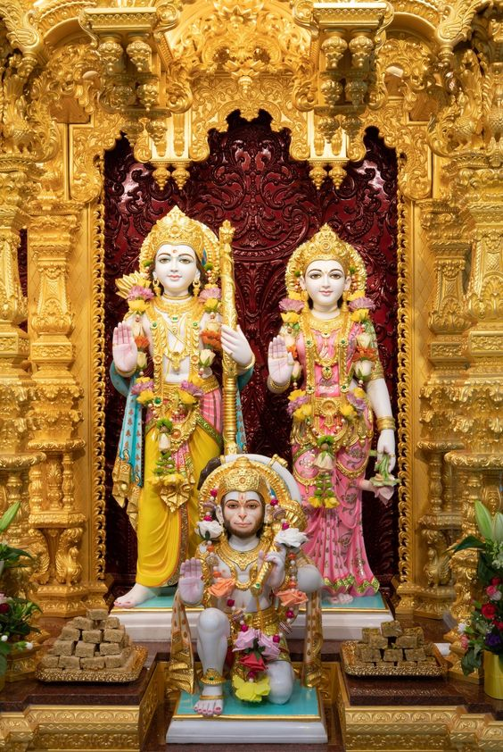

| Hanuman Chalisa | हिंदी |
|---|---|
| ॥ Doha ॥ | |
| Shri Guru Charan Saroj Raj | श्रीगुरु चरन सरोज रज, |
| Nij mane mukure sudhar | निज मनु मुकुरु सुधारि । |
| Varnao Raghuvar Vimal Jasu | बरनउँ रघुवर बिमल जसु, |
| Jo dayaku phal char | जो दायकु फल चारि ॥ |
| Budhi Hin Tanu Janike | बुद्धिहीन तनु जानिके, |
| Sumirau Pavan Kumar | सुमिरौं पवन-कुमार । |
| Bal budhi Vidya dehu mohe | बल बुधि विद्या देहु मोहिं, |
| Harahu Kalesa Vikar | हरहु कलेस विकार ॥ |
| ॥ Chaupayee ॥ | |
| Jai Hanuman gyan gun sagar | जय हनुमान ज्ञान गुन सागर । |
| Jai Kapis tihun lok ujagar | जय कपीस तिहुँ लोक उजागर ॥१॥ |
| Ram doot atulit bal dhama | राम दूत अतुलित बल धामा । |
| Anjani-putra Pavan sut nama | अंजनी-पुत्र पवनसुत नामा ॥२॥ |
| Mahavir Vikram Bajrangi | महावीर विक्रम बजरंगी । |
| Kumati nivar sumati Ke sangi | कुमति निवार सुमति के सङ्गी ॥३॥ |
| Kanchan varan viraj subesa | कंचन वरन विराज सुवेसा । |
| Kanan Kundal Kunchit Kesa | कानन कुण्डल कुंचित केसा ॥४॥ |
| Hath Vajra Aur Dhuvaje Viraje | हाथ वज्र औ ध्वजा विराजे । |
| Kandhe moonj janehu sajai | काँधे मूँज जनेउ साजै ॥५॥ |
| Sankar suvan kesri Nandan | शंकर सुवन केसरीनन्दन । |
| Tej pratap maha jag vandan | तेज प्रताप महा जग बंधन ॥६॥ | Vidyavan guni ati chatur | विद्यावान गुनी अति चातुर । |
| Ram kaj karibe ko aatur | राम काज करिबे को आतुर ॥७॥ |
| Prabu charitra sunibe ko rasiya | प्रभु चरित्र सुनिबे को रसिया । |
| Ram Lakhan Sita man Basiya | राम लखन सीता मन बसिया ॥८॥ |
| Sukshma roop dhari Siyahi dikhava | सूक्ष्म रूप धरि सियहिं दिखावा । |
| Vikat roop dhari lanka jarava | विकत रूप धरि लंक जरावा ॥९॥ |
| Bhima roop dhari asur sanghare | भीम रूप धरि असुर सँहारे । |
| Ramachandra ke kaj sanvare | रामचन्द्र के काज सँवारे ॥१०॥ | Laye Sanjivan Lakhan Jiyaye | रामचन्द्र के काज सँवारे ॥१०॥ |
| Shri Raghuvir Harashi ur laye | श्रीरघुवीर हरषि उर लाये ॥११॥ |
| Raghupati Kinhi bahut badai | रघुपति कीन्ही बहुत बड़ाई । |
| Tum mam priye Bharat-hi sam bhai | तुम मम प्रिय भरतहि सम भाई ॥१२॥ |
| Sahas badan tumharo yash gaave | सहस बदन तुह्मारो जस गावैं । |
| Us kahi Shripati kanth lagaave | अस कहि श्रीपति कण्ठ लगावैं ॥१३॥ |
| Sankadik Brahmadi Muneesa | सनकादिक ब्रह्मादि मुनीसा । |
| Narad Sarad sahit Aheesa | नारद सारद सहित अहीसा ॥१४॥ |
| Yam Kuber Digpal Jahan te | यम कुबेर दिगपाल जहाँ ते । |
| Kavi kovid kahi sake kahan te | कवि कोविद कहि सके कहाँ ते ॥१५॥ |
| Tum upkar Sugreevahin keenha | तुम उपकार सुग्रीवहिं कीन्हा । |
| Ram milaye rajpad deenha | राम मिलाय राज पद दीह्ना ॥१६॥ |
| Tumharo mantra Vibheeshan mana | तुम्हारो मन्त्र विभीषण माना । |
| Lankeshwar Bhaye Sub jag jana | लंकेश्वर भए सब जग जाना ॥१७॥ |
| Yug sahastra jojan par Bhanu | जुग सहस्र जोजन पर भानु । |
| Leelyo tahi madhur phal janu | लील्यो ताहि मधुर फल जानू ॥१८॥ |
| Prabhu mudrika meli mukh mahee | प्रभु मुद्रिका मेलि मुख माहीं । |
| Jaladhi langhi gaye achraj nahee | जलधि लाँघि गये अचरज नाहीं ॥१९॥ |
| Durgaam kaj jagat ke jete | दुर्गम काज जगत के जेते । |
| Sugam anugraha tumhre tete | सुगम अनुग्रह तुम्हारे तेते ॥२०॥ |
| Ram dware tum rakhvare, | राम दुआरे तुम रखवारे । |
| Hoat na agya binu paisare | होत न आज्ञा बिनु पैसारे ॥२१॥ |
| Sub sukh lahai tumhari sarna | सब सुख लहै तुम्हारी सरना । |
| Tum rakshak kahu ko dar na | तुम रक्षक काहू को डर ना ॥२२॥ |
| Aapan tej samharo aapai | आपन तेज सम्हारो आपै । |
| Teenhon lok hank te kanpai | तीनों लोक हाँक तें काँपै ॥२३॥ |
| Bhoot pisach Nikat nahin aavai | भूत पिशाच निकट नहिं आवै । |
| Shree Mahavir jab naam sunavai | महावीर जब नाम सुनावै ॥२४॥ |
| Nase rog harai sab peera | नासै रोग हरै सब पीड़ा । |
| Japat nirantar Hanumant beera | जपत निरन्तर हनुमत बीरा ॥२५॥ |
| Sankat se Hanuman chudavai | संकट तें हनुमान छुड़ावै । |
| Man Karam Vachan dyan jo lavai | मन क्रम वचन ध्यान जो लावै ॥२६॥ |
| Sub par Ram tapasvee raja | सब पर राम तपस्वी राजा । |
| Tin ke kaj sakal Tum saja | तिन के काज सकल तुम साजा ॥२७॥ |
| Aur manorath jo koi lavai | और मनोरथ जो कोई लावै । |
| Sohi amit jeevan phal pavai | सोई अमित जीवन फल पावै ॥२८॥ |
| Charon Yug partap tumhara | चारों जुग परताप तुम्हारा । |
| Hai persidh jagat ujiyara | है परसिद्ध जगत उजियारा ॥२९॥ |
| Sadhu Sant ke tum Rakhware | साधु सन्त के तुम रखवारे । |
| Asur nikandan Ram dulhare | असुर निकन्दन राम दुलारे ॥३०॥ |
| Ashta sidhi nav nidhi ke dhata | अष्टसिद्धि नौ निधि के दाता । |
| Us var deen Janki mata | अस वर दीन जानकी माता ॥३१॥ |
| Ram rasayan tumhare pasa | राम रसायन तुम्हारे पासा । |
| Sada raho Raghupati ke dasa | सदा रहो रघुपति के दासा ॥३२॥ |
| Tumhare bhajan Ram ko pavai | तुम्हारे भजन राम को पावै । |
| Janam janam ke dukh bisravai | जनम जनम के दुख बिसरावै ॥३३॥ |
| Anth kaal Raghuvir pur jayee | अन्त काल रघुवर पुर जाई । |
| Jahan janam Hari-Bakht Kahayee | जहाँ जन्म हरिभक्त कहाई ॥३४॥ |
| Aur Devta Chit na dharehi | और देवता चित्त न धरई । |
| Hanumanth se hi sarve sukh karehi | हनुमत सेइ सर्व सुख करई ॥३५॥ |
| Sankat kate mite sab peera | संकट कटै मिटै सब पीड़ा । |
| Jo sumirai Hanumat Balbeera | जो सुमिरै हनुमत बलबीरा ॥३६॥ |
| Jai Jai Jai Hanuman Gosahin | जय जय जय हनुमान गोसाईं । |
| Kripa Karahu Gurudev ki nyahin | कृपा करहु गुरुदेव की नाईं ॥३७॥ |
| Jo sat bar path kare kohi | जो शत बार पाठ कर कोई । |
| Chutehi bandhi maha sukh hohi | छूटहि बन्दि महा सुख होई ॥३८॥ |
| Jo yah padhe Hanuman Chalisa | जो यह पढ़ै हनुमान चालीसा । |
| Hoye siddhi sakhi Gaureesa | होय सिद्धि साखी गौरीसा ॥३९॥ |
| Tulsidas sada hari chera | तुलसीदास सदा हरि चेरा । |
| Keejai Das Hrdaye mein dera | कीजै नाथ हृदय महँ डेरा ॥४०॥ |
| ॥ Doha ॥ | |
| Pavantnai sankat haran, | पवनतनय संकट हरन, |
| Mangal murti roop. | मंगल मूरति रूप । |
| Ram Lakhan Sita sahit, | राम लखन सीता सहित |
| Hrdaye basahu sur bhoop. | हृदय बसहु सुर भूप ॥ |
also read Durga chalisa here.
